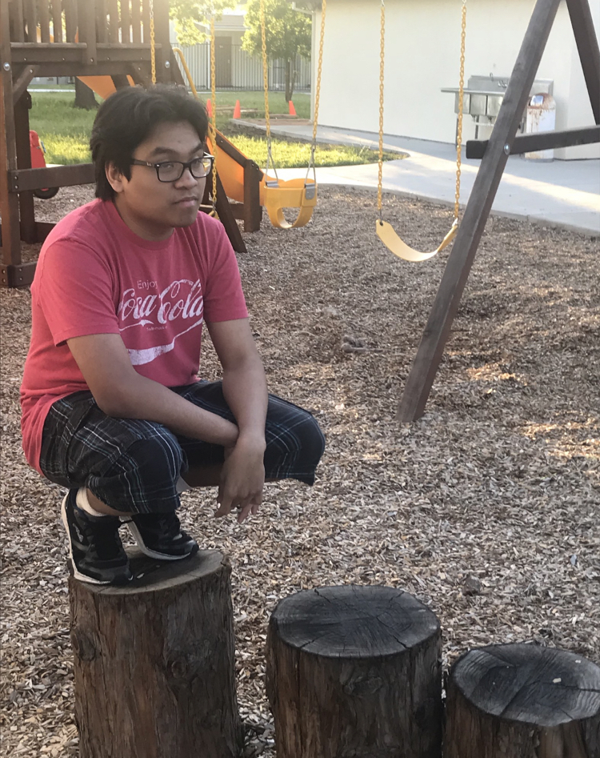

Sam's Homepage

About Me
This is my second class with Wes Modes. I think he is a swell guy and I like his cussing. My favorite dish is teriyaki meals. I do enjoy playing video games quite often, but I also enjoy looking at wildlife when I get the time.